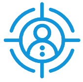
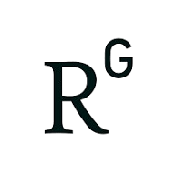

Introduction✨ ✨ ✨
 Brief
The Underwater Robot Team of Institute of Automation, Chinese Academy of Sciences (IACAS) is led by
Min Tan
and Chao Zhou,
and focuses on the underwater robot field including the design,control and perception of the underwater robot, especially bionic robots(like robotic fish).
Our team has developed a variety of fish-like swimming robots, including robotic dolphins, rays, eels, etc.,
and achieved high-maneuverability motion control of fish-like swimming.
Our team has also achieved the rolling and continuous water-jumping motion of robot dolphins.
Scholar
-
Min Tan


- Zhengxing Wu
- Haipeng Li
- Sai Deng
- Wenkai Chang
-
Jian Wang
- Junhang Wei
-
Chao Zhou
- Xiangjiang Li
- Jun Zheng
-
Junfeng Fan
- Peng Li
-
Zhuoliang Zhang
- ...
Cooperation✨ ✨ ✨
The underwater robot team has formed long-term and close cooperative relations with domestic and foreign universities and research institutions, including:
- University of Toronto
- Peking University
- Northwestern Polytechnical University
- South China University of Technology
- Shenzhen Institute of Advanced Technology, Chinese Academy of Sciences
- Shenyang Institute of Automation, Chinese Academy of Sciences
- Institute of Acoustics, Chinese Academy of Sciences
- Guangdong University of Technology
- Boya Gongdao(Beijing)Robot Technology Co.,Ltd.
- Shenzhen Ocean Engineering Technology Service Co., Ltd, CNOOC
- ...
Research✨ ✨ ✨
 Real-time velocity vector resolving of artificial lateral line array with fishlike motion noise suppression
Real-time velocity vector resolving of artificial lateral line array with fishlike motion noise suppression
The past decade has seen the rapid development of the robotic fish in many aspects. However, the velocity measurement problem has not been fully addressed, which limits the autonomy of the robotic fish. To this end, an artificial lateral line (ALL) sensor, inspired by the sensory organs of fish, is developed in this article. By measuring the deformation of the sensitive element, the local flow field around the robotic fish is sensed. According to the characteristics of fishlike motions, a fairing structure is proposed to suppress the turbulence noise and yaw motion noise caused by fishlike oscillation of the tail. This structure ensure that the flow measured by the ALL sensor is closer to laminar flow under viscous effects. Furthermore, to measure the magnitude and direction of the robotic fish velocity, an ALL sensor array is assembled by mounting multiple sensors on the robot's surface to sense the flow field distribution. Next, a kinematic-based fusion method is proposed for the array system, which obtained the real-time velocity vector of the robotic fish by solving overdetermined motion equations. The proposed ALL array system is tested on a freely swimming robotic fish, and our method achieves a mean absolute error of 0.018 m/s, a linearity of 0.951, and a position tracking error of 0.085 m. Additionally, the fairing structure is found to improve the signal-to-noise ratio by 116%. The research has published in IEEE/ASME Transactions on Robotics (SCI, Q1, IF: 7.8), DOI: 10.1109/TRO.2023.3297050。
Toward Propulsive Performance Evaluation of a Robotic Tuna Based on the Damping-Elastic Composite Mechanism
Motivated by the high maneuverability and low power consumption requirements, using elastic components in the joints of robotic fish can improve thrust production and efficiency. However, the propulsive performance of the elastic mechanism cannot be satisfied over a wide range of frequencies. First, this article develops a robotic tuna with a novel passive flexible joint structure, which combines with the compliance features of the elastic component and the damper, so as to maintain an ideal amplitude and phase difference of the caudal fin, resulting in better swimming performance over multifrequency ranges. Moreover, a dynamic model for the robotic tuna is established based on Kane method. Thrust characteristic calculation and computational fluid dynamics method are applied to analyze the propulsion and vorticity characteristics. Simulated results show that the composite mechanism generates higher thrust production and stronger vortex structures. Finally, simulations and experiments validate the effectiveness of the proposed method. Experimental results demonstrate that the robotic tuna can achieve a maximum speed of 1.21 m/s (equivalent to 2.24 body lengths per second) and minimum cost of transport of 45.67 J/(m ⋅ kg). The research has published in IEEE/ASME Transactions on Mechatronics (SCI, Q1, IF: 6.4), DOI: 10.1109/TMECH.2023.3315681。
Structured Light-Based Underwater Collision-Free Navigation and Dense Mapping System for Refined Exploration in Unknown Dark Environments
Underwater collision-free navigation and dense reconstruction are essential for marine refined exploration. However, existing passive vision-based methods are difficult to apply in low-light and weak-feature underwater environments. In this article, a more adaptable three-dimensional (3-D) dense mapping robotic system based on self-designed scanning binocular structured light (BSL), named ROV-Scanner, is developed to address this challenge. First, the measurement principle based on the refraction model ensures its high accuracy. Second, an underwater 3-D dense mapping algorithm fusing the Doppler velocity log (DVL), inertial measurement unit (IMU), and pressure sensor multifrequency information is proposed to realize dense mapping during robot motion. Then, an air–water two-stage extrinsic calibration algorithm is proposed. In particular, the extrinsic parameters between DVL and camera are innovatively calibrated using BSL, enhancing robustness. Furthermore, for the first time, a framework of BSL-based collision-free navigation is presented to guarantee the safe movement of the system in unknown environments. Experimental results show that our system can simultaneously achieve autonomous collision-free navigation and dense mapping in dark underwater environments, which has great potential for application in marine refined exploration. The research has published in IEEE Transactions on Systems, Man, and Cybernetics: Systems (SCI, Q1, IF: 8.6), DOI: 10.1109/TSMC.2024.3370917。
CMBUV: A Composite-Mechanism Bioinspired Underwater Vehicle Integrated With Elasticity and Shear Damping Possesses High-Performance Capability
Benefiting from the potential advantages of low noise, high efficiency and little disturbance, bionic propulsion has attracted wide attentions. Compared with the rigid structure, the performance of the elastic propulsion structure such as flexible caudal fin and passive compliant joint has been improved, yet the effective frequency range is limited due to the single mechanism. The optimal propulsion can only be produced in a certain frequency range. In this article, a biological passive peduncle joint integrated with the composite mechanism of elasticity and shear damping is proposed, solving the problem of the narrow frequency range of effective propulsive capacity. Through the optimal regulation of the elastic function at a certain frequency range and characterization of the damping function which increases with frequency, the response features of the passive joint are optimized over a wide range of frequencies, thereby improving the propulsive performance of the composite-mechanism bioinspired underwater vehicle (CMBUV). A dynamic model is built and the deformation analysis of the compliant caudal fin is carried out. The propulsive efficiency is characterized, and the results indicate that the compliant caudal fin modulates the power transmission for enhancing thrust production. Extensive simulations and experiments reveal that the CMBUV achieves both high swimming speed with 4.42 body length per second and low cost of transport with 90.33 J/kg/m. Bioinspired propulsion from this study takes advantage of undulating propulsion of natural fish, offering valuable insights into performing marine tasks in ocean environments. The research has published in IEEE Transactions on Intelligent Vehicles (SCI, Q1, IF: 14), DOI: 10.1109/TIV.2023.3286820。
Toward Swimming Speed Optimization of a Multi-Flexible Robotic Fish With Low Cost of Transport
Due to the complex mechanism and fabrication process of flexible materials,
it remains extremely challenging for a flexible robotic fish to achieve fast and efficient
locomotion. In this article, taking advantage of the passive bending and energy storage
properties of flexible materials, we propose an untethered robotic fish with multiple
flexible joints to achieve high performance and low Cost of Transport (COT). First,
combining rigid links and flexible materials, a compact flexible tail with a simple
and efficient structure is proposed. Next, the pseudo-rigid body theory is applied
to analyze the deformation of passive joints, and a full-state dynamic model is established.
More importantly, an optimization method by adjusting the phase differences of
the passive joints is used to obtain high aquatic performance. Finally, extensive
simulations and experiments validate the effectiveness of the proposed method, and
the robotic fish can achieve a maximum speed of 1.63 body length (BL) per second
and a minimum COT of 4.8 J/m (2.87 J/m/kg). Compared with the multi-joint
robotic fish with a similar design, the COT is reduced by up to 81.05% with the
basically same aquatic ability. Excitingly, the flexible robotic fish can achieve
a COT of 7.36 J/m at 1.23 BL/s, which is 15.72%–36.34% lower than that of the bluefin
tuna and is within the range of yellowfin tuna, offering valuable insight into high
speed and long endurance applications for underwater robots.
Note to Practitioners–This paper is motivated by the design and optimization of an
efficient bionic flexible underwater robot with high aquatic abilities, which is
conducive to aquatic tasks that require long-time and long-distance sailing,
such as underwater topographic exploration, submarine archaeology, and underwater
search and rescue. Existing studies of free-swimming bionic underwater robots
usually focus on the improvement of swimming speed and rarely consider achieving
both high swimming performance and low energy cost. Thus, this paper proposes a
bionic underwater robot design with two joints made of flexible materials on the
tail to address the problem. Based on detailed analyses of the hydrodynamic force
and flexible joint deformation, we propose an effective optimization method for
swimming performance. A series of simulations and experiments suggest that the
mechatronic design and optimization method are practical and valid. Hopefully,
our design and method can provide theoretical guidance for engineers to design
and optimize robots with flexible joints.
The research has published in IEEE Transactions on Automation Science and Engineering
(SCI, Q1, IF: 5.9), DOI: 10.1109/TASE.2023.3269775。
Design and Modeling of a Sperm-Inspired Helical Propulsion Robot
The development of biomimetics and the demand for higher propulsion efficiency lead to more research in helical propulsion robots. This letter presents a novel sperm-inspired robot that utilizes flexible tail as propulsion and analyzes the motion performance. Firstly, the robot's propulsion system is a center-fixed rotation mechanism that can accurately mimic the motion of the sperm tail. Secondly, based on resistance theory and Kirchhoff's rod theory, the dynamic model is established to analyse the propulsive performance. More importantly, it is found that the motion of helical propulsion can be divided into two models: roll and spin, and the allocation ratio of these two motions affects the propulsive performance. Thirdly, we introduce spoilers to alter the resistance of the head, thereby changing the allocation ratio of the roll and spin motion. Based on the proposed model, we conduct simulations and achieve optimization of spoiler size parameters. Finally, through experiments, the effectiveness of the robot is verified. Based on the optimization results of the spoilers, this robot can achieve propulsion with a maximum forward velocity of 12.78 cm/s. The research has published in IEEE Robotics and Automation Letters (SCI, Q2, IF: 4.6), DOI: 10.1109/LRA.2023.3324876。
Discrete Vortex Method-Based Fish-Like Locomotion Modeling
In nature, fish can achieve efficient swimming through vortex control, which is also a crucial factor in the propulsion of biomimetic robotic fish. Existing analytical models of robotic fish generally do not consider vortices. In addition, numerical methods for solving fluid dynamics are complex and computationally intensive. In this article, based on the discrete vortex method (DVM), the point vortex circulation caused by tail oscillation is calculated and an accurate and efficient dynamic model for robotic fish is established. Specifically, for a single-joint robotic fish, the hydrodynamic forces on the tail are analyzed using the DVM and calculated using the unsteady Bernoulli equation. And for the fish head, the simplified Morison equation is adopted to analyze the inertial forces and drag forces. Then, the dynamics of the entire robotic fish are derived using the Newton-Euler method, allowing for the calculation of position, velocity, forces, and wake circulation at each moment. As a result, the vortex structure obtained from the proposed method exhibits characteristics of a reverse Karman vortex street, similar to previous DPIV results and computational fluid dynamics (CFD) simulations. Furthermore, the simulated speeds closely match the experimental results with an average absolute error of 16.73%, which reduces the error by 2.95% compared to the conventional quasi-steady lift and drag model. Meanwhile, our method requires much less time consumption compared to the CFD method, making it convenient for application in the control and optimization of robotic fish. The research has published in IEEE Journal of Oceanic Engineering (SCI, Q2, IF: 3.8), DOI: 10.1109/JOE.2023.3338926。
Location✨ ✨ ✨